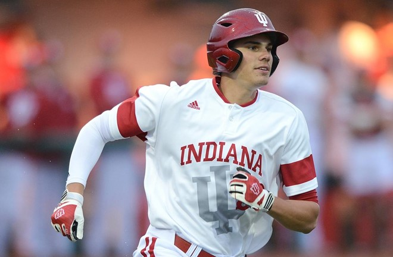
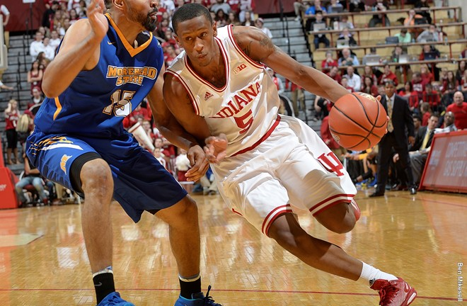
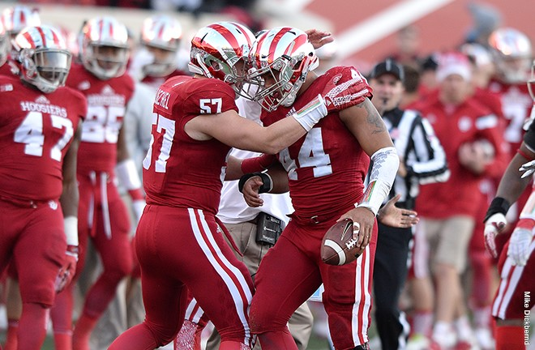
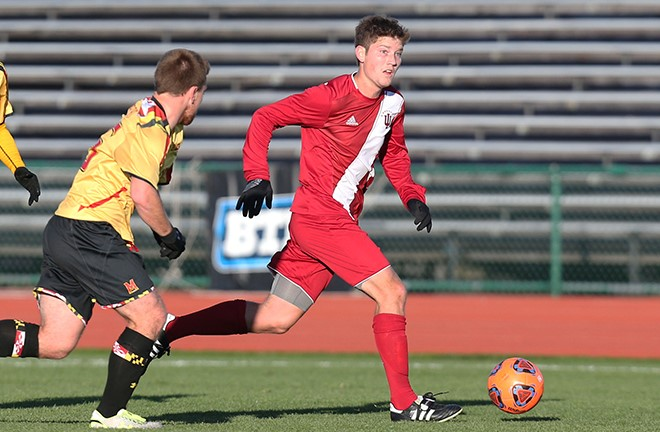
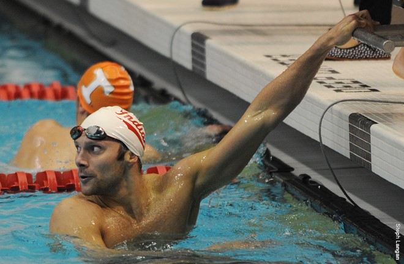
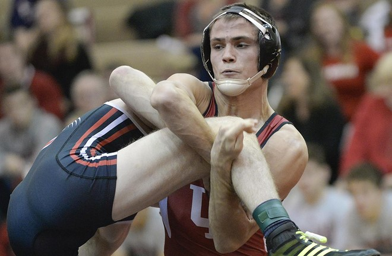

Sports and Athletics
Here are some of the popular sports@IU

Indiana Hoosiers Baseball
The Indiana Hoosiers baseball team is the varsity intercollegiate athletic team of Indiana University Bloomington in Bloomington, Indiana, USA. The team competes in the National Collegiate Athletic Association's Division I and are members of the Big Ten Conference. The team plays at Bart Kaufman Field, which opened for the 2013 season. Check out more information over here .

Indiana Hoosier basketball
The Indiana Hoosiers men's basketball team is the intercollegiate men's basketball program representing Indiana University (IU). The school competes in the Big Ten Conference in Division I of the NCAA. The Hoosiers play on Branch McCracken Court at the Assembly Hall in Bloomington, Indiana on the IU campus. Indiana has won five NCAA Championships in men's basketball (1940, 1953, 1976, 1981, 1987) — the first two under coach Branch McCracken and the latter three under Bob Knight. The Hoosiers' five NCAA Championships are tied for third in history with North Carolina and Duke (5), trailing only UCLA (11), and Kentucky (8). Indiana's 1976 squad remains the last undefeated NCAA men's basketball champion, and considered by many to be the best college basketball team ever. Check out more information over here here.

IU Football
The Indiana Hoosiers football program represents Indiana University Bloomington in NCAA Division I Football Bowl Subdivision college football and in the Big Ten Conference. The Hoosiers have played their home games at Memorial Stadium since 1960. The team has won the Big Ten Championship twice, once in 1945 and again in 1967. The Hoosiers have appeared in nine bowl games, including the 1968 Rose Bowl. Numerous Indiana players have been inducted into the College Football Hall of Fame, including Zora Clevinger, Bill Ingram, Pete Pihos, George Taliaferro, John Tavener, and Anthony Thompson, who was also National Player of the Year in 1989. Visit their website here .

IU Soccer
By a number of indicators, the Hoosiers are one of the greatest soccer programs in the history of the sport. The Hoosiers have won eight national championships in men's soccer (1982, 1983, 1988, 1998, 1999, 2003, 2004 and 2012), second only to St. Louis' 10. Indiana owns more wins, has appeared in more College Cups (18) and has a higher winning percentage in both regular season and post-season play than any other school in Division I soccer. The Hoosiers have also dominated conference play. Since the Big Ten began sponsoring men's soccer in 1991, Indiana has won 11 Big Ten tournament titles. Indiana has also been crowned regular season champion 14 times, including nine-straight seasons from 1996-2004. A league-record 11 Big Ten Players of the Year come from Indiana, including three of the last five seasons. Visit their website here .
IU Cross Country
Indiana is one of only nine schools in the nation to have won more than two men's national titles, and is one of seven programs to win at least three national titles. The school's three team national titles came in 1938, 1940, and 1942. Indiana's 29 NCAA men's championship team appearances are tied for ninth-most in the sport’s history. Indiana has found itself in the top five at the NCAA Men's Championship on nine different occasions. A Hoosier has captured the men's individual crown three times, making Indiana one of only six schools in the country, and the only Big Ten school, to have more than two individual NCAA men's cross country champions. The three individual titles rank as the fourth-most by any school. Bob Kennedy, regarded as one of the greatest U.S. distance runners in history, graduated from the program in 1992.
For more information

IU Swimming
Both the Hoosier men's and women's teams compete at the Counsilman-Billingsley Center in the Student Recreational Sports Center, a 44,651-square-foot (4,148.2 m2) aquatics center. It features an eight-lane Olympic-sized pool spanning 30,512 square feet (2,834.7 m2) with depth ranging from seven to eight feet to allow for greater speed. The Billingsley Diving Center, complete with one of the country's few indoor diving towers, features four one-meter and two three-meter springboards as well as one-, three-, five-, seven- and 10-meter platforms. The Indiana University Outdoor Pool serves as the team's training facility in the summer months. It features a ten-lane Olympic-sized pool along with a diving pool that includes a 10-meter platform.
For more information

IU Wrestling
The Indiana Hoosiers Wrestling began in 1909, with accomplishments such as: 50 individual All-Americans, 12 individual NCAA National Champions from 1932-2008, and 1 team NCAA National title in 1932. In 1946 Indiana took 2nd in the Big Ten Championships and 4th in the NCAA Championships. In recent years better seasons included the 1989-1990 season placed 2nd in the Big Ten Conference and 8th at the NCAA Championships, and the 2004-2005 season took 5th place at the Big Ten Conference and 9th at the NCAA Championships. Check out their website here.
Learn more about Sports@IU over here